Un environnement commun où chacun·e fait pousser les droits de l’enfant.
Mon tableau de bord
Semaine 1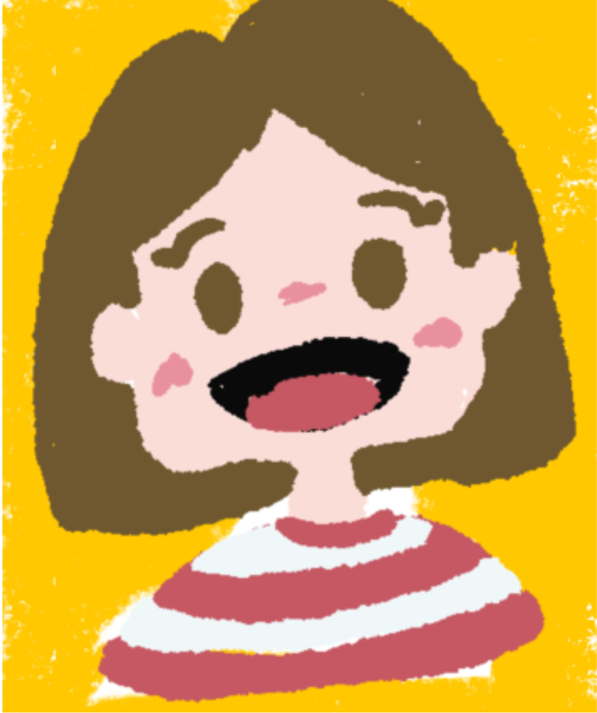
Cette semaine, tu explores le droit d’être entendu et la compétence “écouter avant de répondre”.
Mission en cours
Cette semaine, propose une règle pour améliorer le respect dans la classe. Discute-la avec ton groupe.
Mes badges
Graines collectées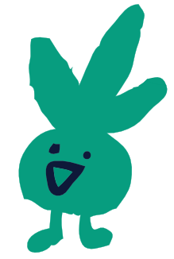
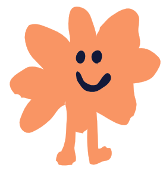
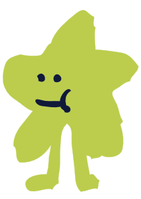
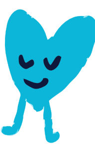
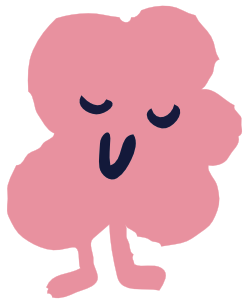
Thèmes de mission
Clique sur un terrain pour découvrir le thème de la quinzaine.
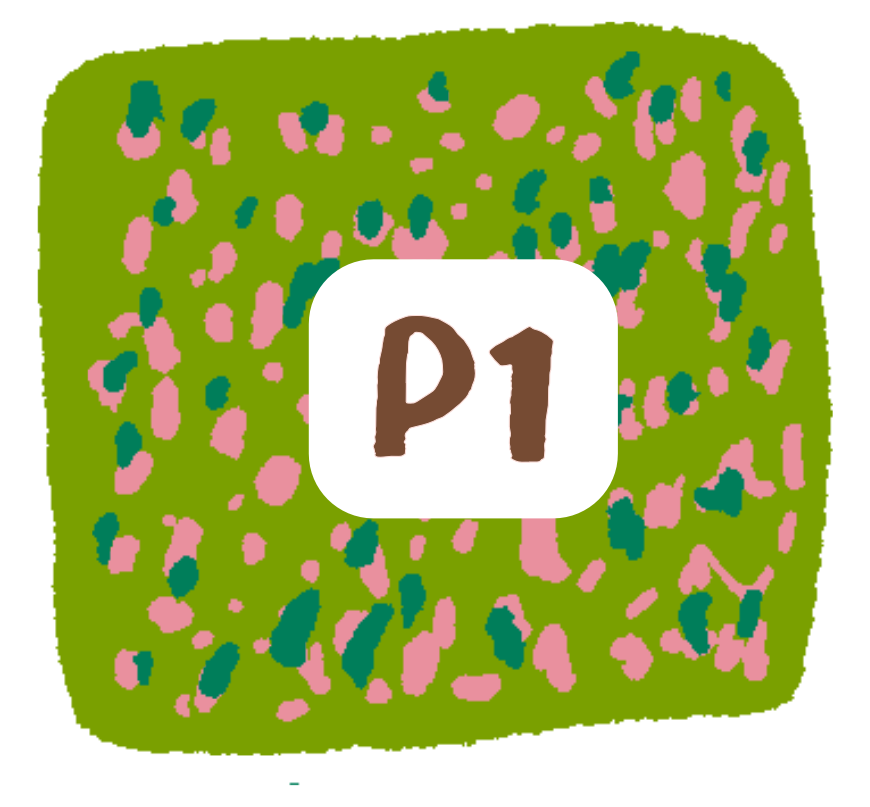
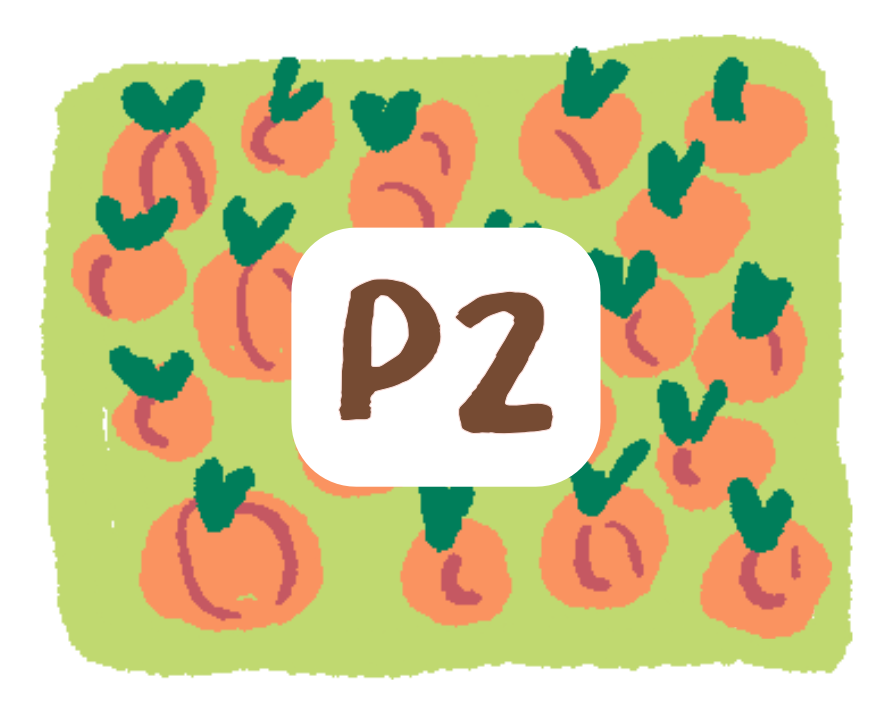
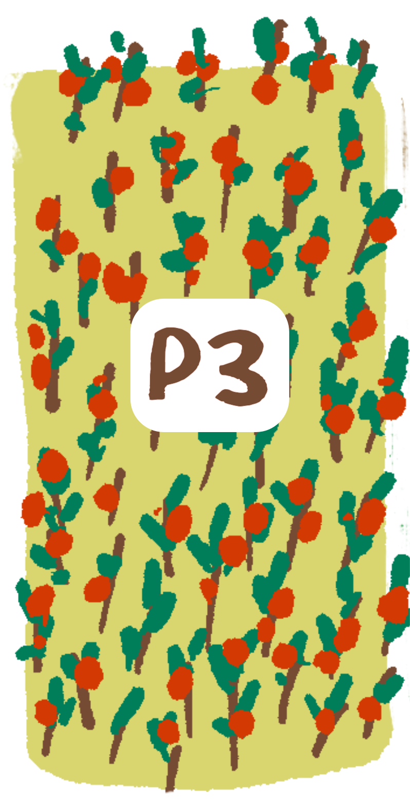
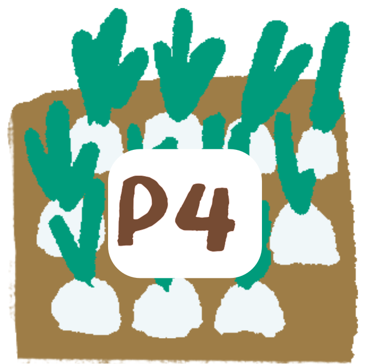
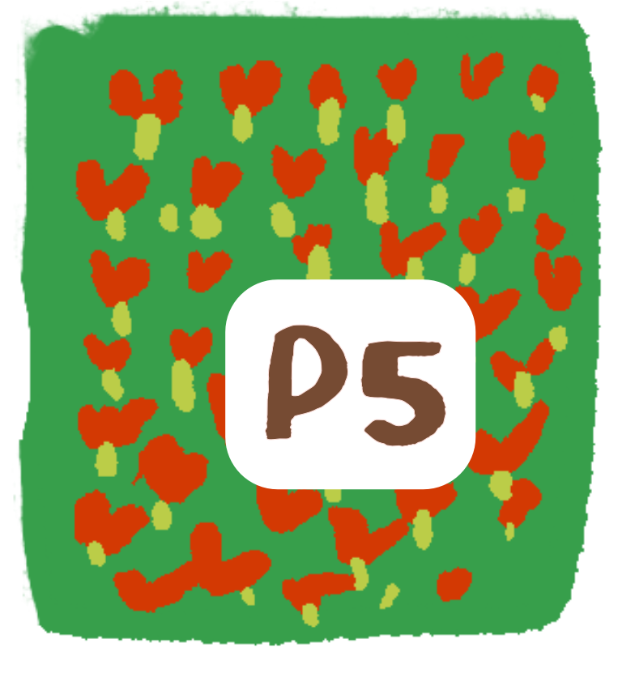
Missions “Droits en action”
Classe & maisonChoisis une mission à réaliser cette semaine. Quand tu as terminé, clique sur “Je l’ai fait”. Ton enseignant·e pourra voir tes missions et laisser un commentaire.
Mes histoires interactives
Je choisis ce que je veux travailler cette semaine :
BD — Réseaux sociaux & respect en ligne
Consentement & image numériqueLis la BD en cliquant sur les flèches. Elle raconte une histoire où une photo est publiée sans demander l'accord de la personne concernée.
La BD sert de point de départ pour discuter en classe :
• du droit au respect de la vie privée et
à l'image,
• du consentement avant de
publier quelque chose,
• des
compétences psychosociales utiles pour réagir
(oser parler, dire non, demander de l'aide).
En Suisse, l’âge légal pour accéder aux réseaux sociaux est fixé à 13 ans, mais ce thème reste essentiel à aborder, car les études (OFS, 2023) montrent que des enfants plus jeunes les utilisent déjà massivement.
Après la lecture, l'enseignant·e peut animer une discussion
:
• Que ressent l'élève sur la photo ?
• Qui
aurait dû demander quoi ?
• Quelles solutions
respectent les droits de chacun·e ?
Ensuite, les élèves peuvent écrire dans leur journal ou choisir une mission "Droits en action" en lien avec le numérique (par exemple : proposer une règle pour les photos et les réseaux sociaux dans la charte de classe).
Timeline de mes séances
Mon journal de bord (privé)
Respiration guidée
Pause douceurAppuie sur “Lancer” et suis la bulle : elle grandit quand tu inspires, elle diminue quand tu expires.
Mon besoin du moment
Conscience de soiChoisis ce dont tu as le plus besoin maintenant :
Ton besoin et des idées d’actions s’afficheront ici.
Créer ton Altero
Atelier créatifDécrire ton Altero
Identité & sensVoici un aperçu de ton Altero. Il s’agit du dessin final que tu as créé dans l’éditeur.
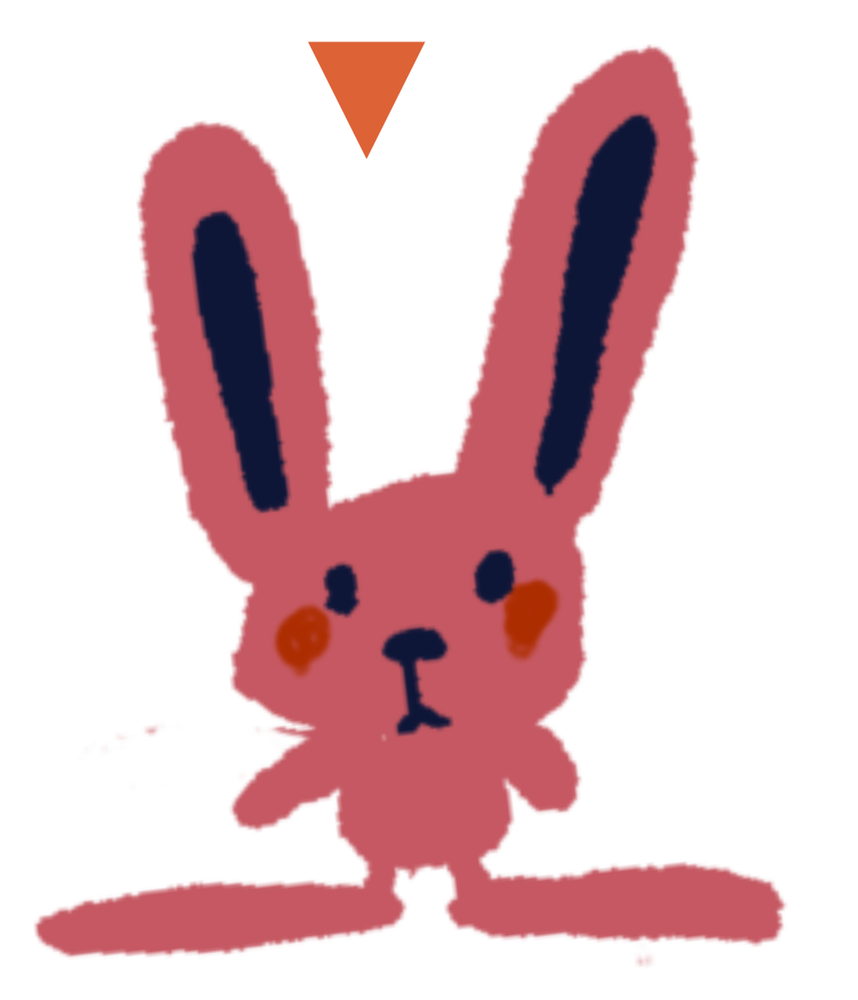
Explique comment il s’appelle, ce qu’il représente et comment il t’aide.
Modules de formation
Mini-modules pour découvrir ou approfondir les compétences psychosociales (CPS) et les droits de l’enfant.
- Module 1 – Introduction aux CPS
- Module 2 – Droits de l’enfant et CIDE
- Module 3 – Éducation par et pour les droits
Filtrer les activités
Choisissez une compétence ou un droit pour voir des idées.
Filtres par CPS / droitBanque d’activités
Suivi des missions
Aperçu des missions “Droits en action” déclarées par les élèves.
Forum des enseignant·es
Partager des idées, poser des questions et échanger avec d’autres enseignant·es qui participent au programme Graines de droits.
Mon droit de la semaine
Vidéo (1–2 min) – Cette semaine, les enfants travaillent le droit d’être entendu (art. 12) et la compétence “écoute active”.
Mini-défis à la maison
Suivi du parcours & forum
Compétences travaillées récemment : empathie, gestion des conflits.
Forum d’échanges
Partagez ce que vous testez à la maison.
Ressources
- Comment soutenir la régulation émotionnelle.
- Écouter sans juger : quelques phrases possibles.
- Les droits de l’enfant à la maison, en 1 page.
Ressources croisées CPS & droits
Quelques supports communs pour nourrir les échanges école-famille :
- Fiche – “Les 5 familles de compétences psychosociales et des exemples concrets en classe et à la maison”.
- Fiche – “Les droits de l’enfant en version enfant, parent, école”.
- Idées d’activités à faire en duo parent-enfant sur un droit (ex : droit d’être entendu, droit au jeu).
Forum école-famille
Un espace commun pour partager des questions, des idées de projet ou des retours sur le dispositif.